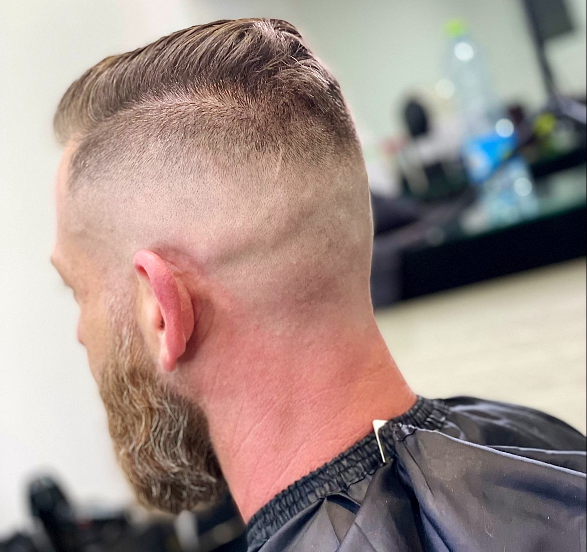
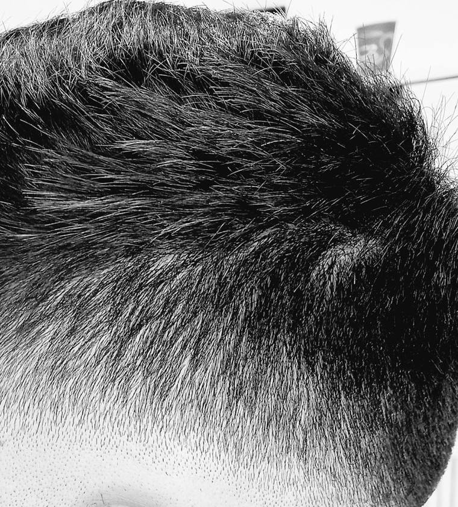
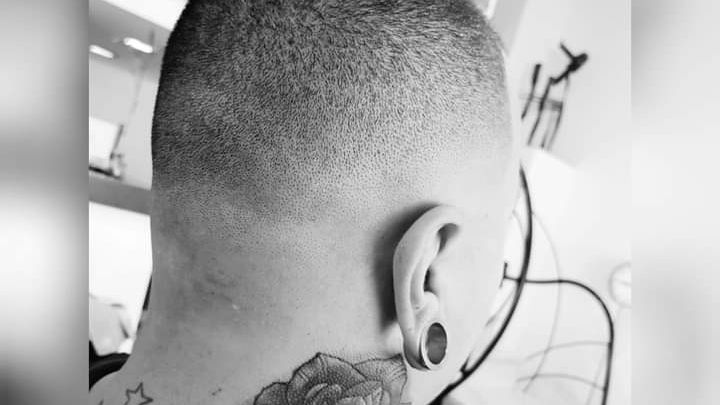
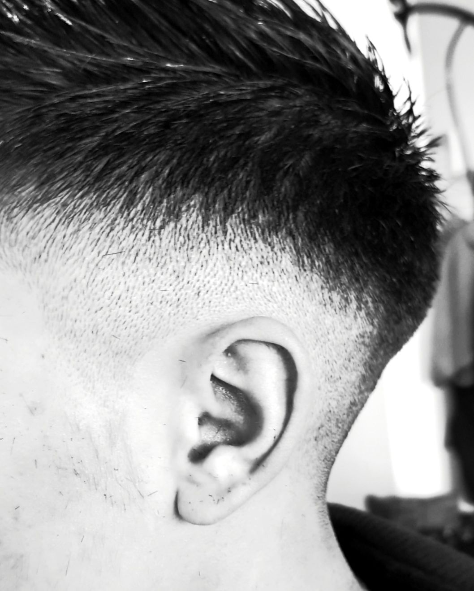
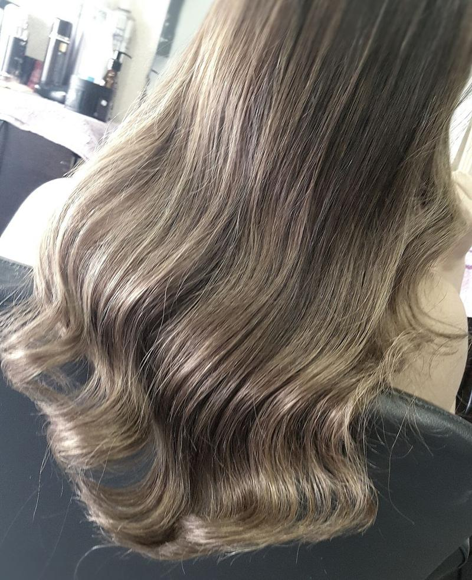
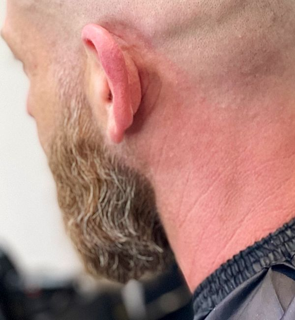

איציק אסוליןEizik Asulin
פייד שנבלע בעור, זקן בקו נקי ושיחה טובה בכיסא.Fades that melt into the skin, clean beard lines and good talk in the chair.
מספרה · שדרות משה גושן 81, קריית מוצקין · 4.9 בגוגל מ-50 ביקורותBarbershop · 81 Moshe Goshen Blvd, Kiryat Motzkin · 4.9 on Google from 50 reviews
העבודה מקרובThe work, up close
תמונות מהעבודה של איציק, מהעמוד של העסק בגוגל.Eizik’s own photos of his work, from the business’s Google page.




עין חדהA sharp eye
„ספר תותח עם ידיים טובות ועין חדה… משרה אווירה נעימה ובעל שיחה.”“A great barber with good hands and a sharp eye… a pleasant atmosphere and good conversation.”
העבירו את הזכוכית על המעבר.גללו, והזכוכית עוברת על המעבר.Move the loupe across the blend.Scroll, and the loupe travels along the blend.
לפני שמגיעיםBefore you come
מ-50 ביקורות בגוגלfrom 50 Google reviews

גם זקניםBeards too
„איציק אלוף מספר אחד. גם סידור זקנים.” · עדי סירוטה“Eizik is number one. Beards too.” · Adi Sirota (translated)
בתיאום מראשBy appointment
שולחים לאיציק הודעה וקובעים שעה.Send Eizik a message and set a time.
שדרות משה גושן 8181 Moshe Goshen Blvd
קריית מוצקיןKiryat Motzkin
לניווטDirectionsקובעים תורBook a chair
משלימים את המשפט ושולחים לאיציק בוואטסאפ.Finish the sentence and send it to Eizik on WhatsApp.
איציק אסוליןEizik Asulin052-673-0926
שליחה לאיציק בוואטסאפSend to Eizik on WhatsApp4.9 מ-50 ביקורות4.9 from 50 reviews
„איציק תותחח מניסיון. הכי תותח שאני מכיר באזור.”“Eizik is great, from experience. The best I know in the area.”
„איציק אחלה בנאדם וספר מעולה. מומלץ!”“Eizik is a great guy and an excellent barber. Recommended!”
„ספר תותח עם ידיים טובות ועין חדה, שווה את המחיר, משרה אווירה נעימה ובעל שיחה.”“A great barber with good hands and a sharp eye, worth the price, a pleasant atmosphere and good conversation.”
„איציק אלוף מספר אחד. גם סידור זקנים.”“Eizik is number one. Beards too.”
ביקורות אמיתיות מגוגל, כלשונן.Real Google reviews, translated from Hebrew.
איך מגיעיםFind the chair
שדרות משה גושן 81, קריית מוצקין81 Moshe Goshen Blvd, Kiryat Motzkin